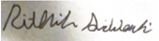

Mentoring Testimonials
Nominated by 10 Purdue students for a mentorship award. Some of their words.
"Helped with mmWave blockers. Listens to rant and helps in setting thoughts in order. You can go to him anytime, and he will somehow find time to help you out."
"Ian has been a huge part of my growth as a researcher and teammate. He explains hard concepts in a clear way, and often brings fresh ideas that unblock the work fast. His mentorship mattered most during my hardest moments, helping me shift my mindset toward being more positive, steady, and optimistic."
"As a mentor, Ian made research very accessible. He was always open to questions, teaching that research is about learning rather than just knowing. Through every project Ian leads, it feels like a team rather than one person, giving us personal, direct guidance."
"Ian has provided a lot of guidance not just on what a concept is, but on how to approach it, technical or not. He's taught me how to obtain useful information from dense sources quickly, and helped me formulate plans for graduate school and my career."
"This is my first research experience in a Purdue lab, and Ian did a great job of helping me get involved and invested in the community and research here. He encouraged collaboration between members of the lab and managed the lab environment well."
"Ian has been a great mentor, always extremely responsive no matter how simple the question. That mattered most for someone like me, who initially had trouble figuring out what I needed to do every time I was in the lab."

"The number one thing I appreciate about Ian is his responsiveness and attentiveness. No question is ever stupid with Ian. When we found a paper close to our original idea, he helped us pivot and turn it into a learning opportunity rather than a setback."
"Research is a difficult and time-consuming process, but having Ian as a mentor has made it significantly more manageable. He is consistently supportive and always available when I or others in the lab need help."
"Ian always made me feel welcomed and supported in the lab by fostering an environment built on patience, encouragement, and a genuine belief in anyone willing to put in time and effort."
"Ian truly embodies the Purdue spirit of 'always one brick higher.' He goes above and beyond, not only teaching, but making sure to lay out problems in a distinctly human, brick-by-brick way, so no one's left behind."